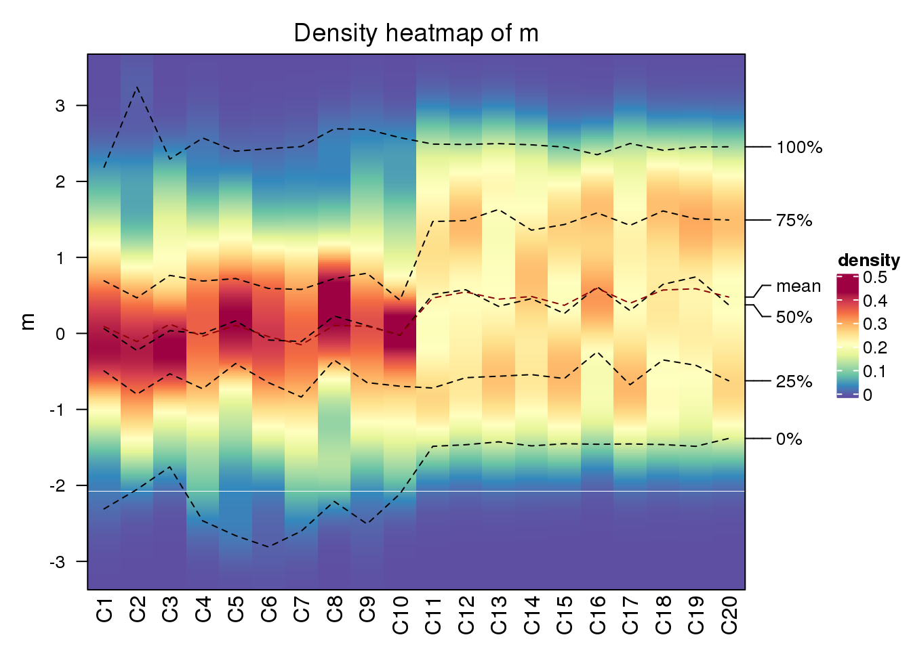
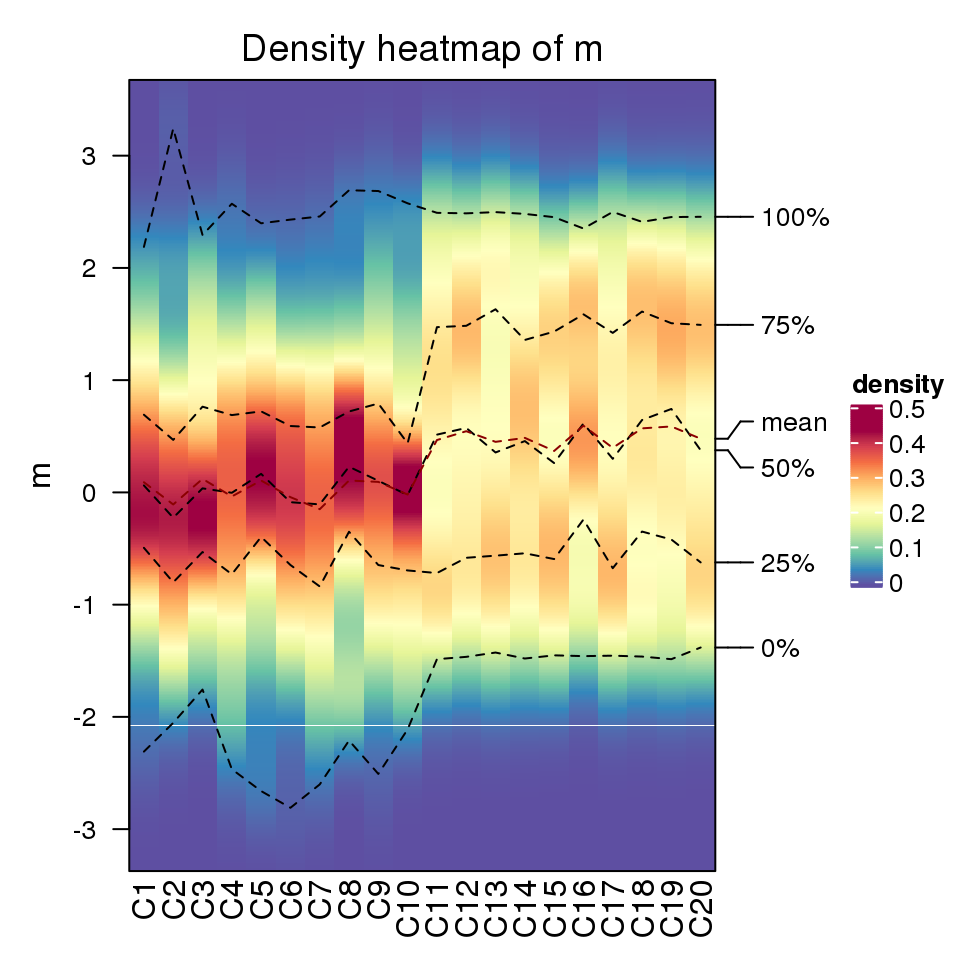
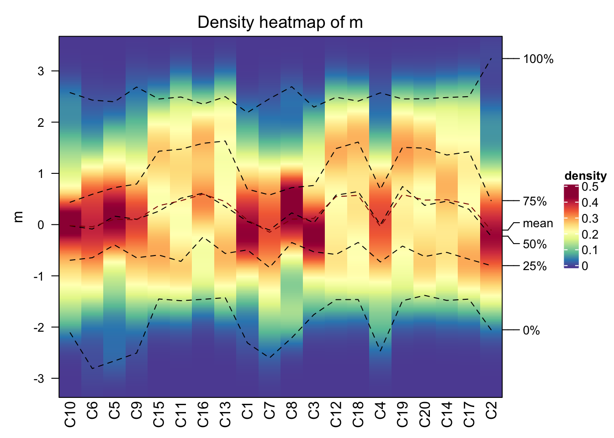
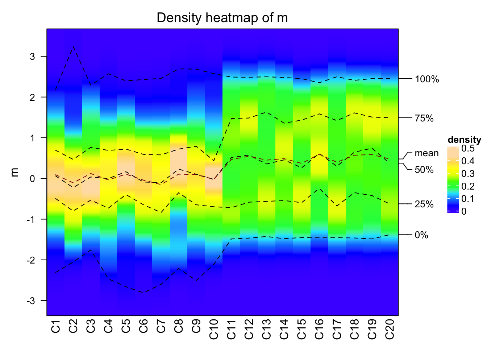
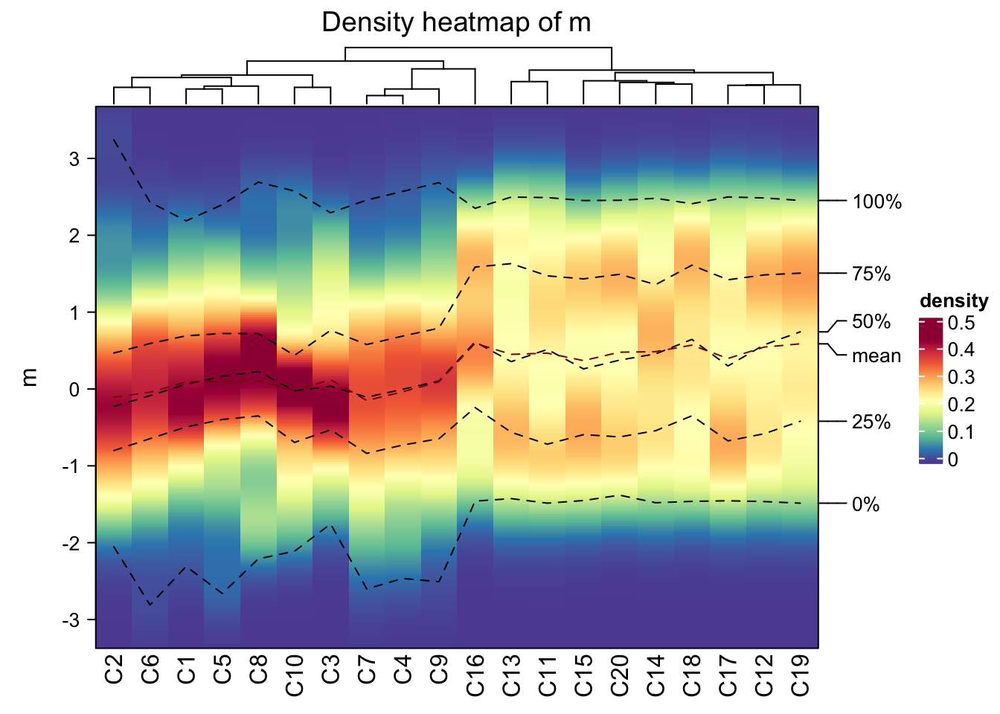
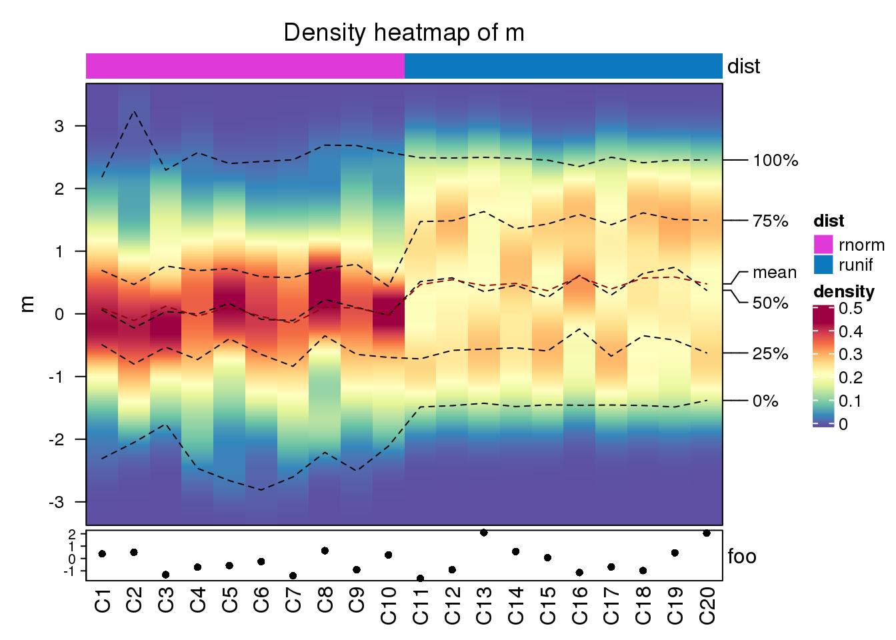
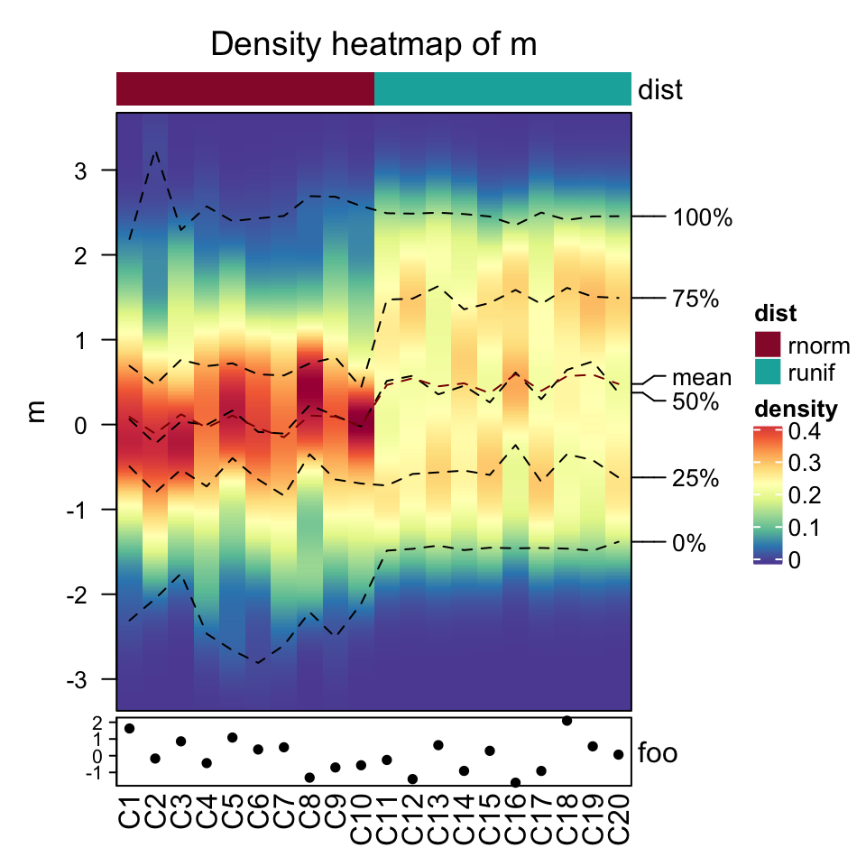
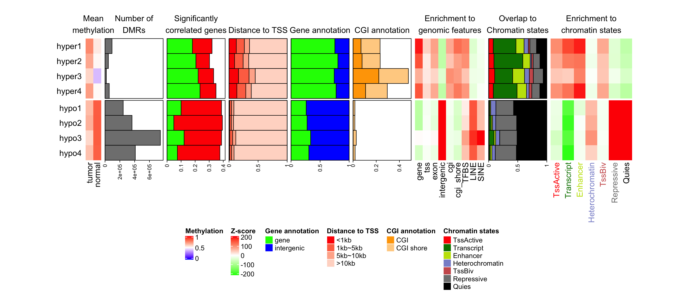
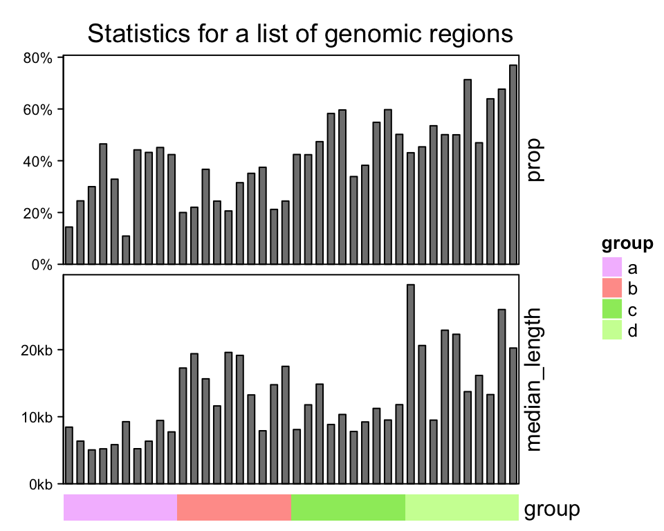

Chapter 10 Other High-level Plots
10.1 Density heatmap
To visualize data distribution in a matrix or in a list, we normally use boxplot or violin plot. We can also use colors to map the density values and visualize distribution through a heatmap. It is useful if you have huge number of columns in data to visualize.
In following examples, we use matrix as input data where the density is calculated by columns. The input data can also be a list.
set.seed(123)
m = cbind(matrix(rnorm(10*100), ncol = 10),
matrix(runif(10*100, min = -2, max = 2) + 0.5, ncol = 10))
colnames(m) = paste0("C", 1:ncol(m))
densityHeatmap(m)
On the heatmap, there are also lines representing five quantiles and mean values.
Data range is controlled by ylim. Title is controlled by title or
column_title. Title on y-axis is controlled by ylab.

Column order is controlled by column_order.

The color for the density values is controlled by col which is a vector of
colors.

Internally, the density for all columns are stored as a matrix where rows
correspond to the same bins. Since it is a matrix, clustering can be applied
on it. There is a special distance method ks for measuring similarity
between distributions which is the Kolmogorov-Smirnov statistic between two
distributions (ks distance is the default if cluster_column = TRUE).

When there are many distributions to calculate the pairwise Kolmogorov-Smirnov distance,
mc.cores argument can be set to make it running parallelly.
Column annotations can be added as top annotation or bottom annotation.
ha1 = HeatmapAnnotation(dist = c(rep("rnorm", 10), rep("runif", 10)))
ha2 = HeatmapAnnotation(foo = anno_points(rnorm(20)))
densityHeatmap(m, top_annotation = ha1, bottom_annotation = ha2)
Heatmaps and column annotations can only be concatenated to the density heatmap vertically.
densityHeatmap(m) %v%
HeatmapAnnotation(foo = anno_barplot(1:20)) %v%
Heatmap(matrix(rnorm(20*20), ncol = 20), name = "mat", height = unit(6, "cm"))
10.2 Stacked summary plot
Multiple annotations and heatmaps can be used to visualize multiple summary statistics for a same set of features. In following example, there are multiple statistics for differential methylated regions (DMRs) from four different subgroups.
## [1] "label" "mean_meth" "n_gr" "n_corr"
## [5] "dist_tss" "gene_anno" "cgi_anno" "mat_enrich_gf"
## [9] "mat_pct_st" "mat_enrich_st"These statistics for DMRs are:
label: The labels for the sets of DMRs. There are DMRs for four subgroups and for each subgroup, DMRs are separated into hyper-methylated DMRs and hypo-methylated DMRs.mean_meth: The mean methylation in DMRs in tumor samples and in normal samples.n_grNumber of DMRs in each set.n_corr: Percent of DMRs that show significant correlation to nearby genes. The positive correlation and negative correlation are calculated separatedly.dist_tss: Distance to nearby gene TSS. The value is proportion of DMRs in current set which have distance less in 1kb, between 1kb and 5kb, between 5kb and 10kb and more than 10kb.gene_anno: The proportion of DMRs that overlap to genes or intergenic regions.cgi_anno: The proportion of DMRs that overlap to CpG islands or CGI shores.mat_enrich_gf: The enrichment to a list of genomic features. Positive values mean over representation.mat_pct_st: The proprotion of DMRs that overlap to chromatin states.mat_enrich_st: The enrichment to the chromatin states.
Attach all these variables to the working environment.
Since we have many statistics to visualize, we first define the colors. We define color mapping functions for the statistics which we want to visualize as heatmaps and color vectors for those we want to visualize as barplots.
library(circlize)
meth_col_fun = colorRamp2(c(0, 0.5, 1), c("blue", "white", "red"))
corr_col = c("green", "red")
dist_tss_col = c("#FF0000", "#FF7352", "#FFB299", "#FFD9CB")
gene_anno_col = c("green", "blue")
cgi_anno_col = c("#FFA500", "#FFD191")
z_score_col_fun = colorRamp2(c(-200, 0, 200), c("green", "white", "red"))
state_col = c("#FF0000", "#008000", "#C2E105", "#8A91D0", "#CD5C5C", "#808080", "#000000")The construction of the heatmap list very straightforward. Each statistic is constructed as a heatmap or a row annotation.
anno_width = unit(3, "cm")
ht_list = rowAnnotation(text = anno_text(label, location = unit(1, "npc"), just = "right",
gp = gpar(fontsize = 12)))
ht_list = ht_list + Heatmap(mean_meth, name = "mean_meth", col = meth_col_fun,
cluster_rows = FALSE, row_title = NULL, cluster_columns = FALSE, show_row_names = FALSE,
heatmap_legend_param = list(title = "Methylation"), width = ncol(mean_meth)*unit(4, "mm")) +
rowAnnotation("n_gr" = anno_barplot(n_gr, bar_width = 1, width = anno_width),
show_annotation_name = FALSE) +
rowAnnotation("n_corr" = anno_barplot(n_corr, bar_width = 1, gp = gpar(fill = corr_col),
width = anno_width), show_annotation_name = FALSE) +
rowAnnotation("dist_tss" = anno_barplot(dist_tss, bar_width = 1, gp = gpar(fill = dist_tss_col),
width = anno_width), show_annotation_name = FALSE) +
rowAnnotation("gene_anno" = anno_barplot(gene_anno, bar_width = 1, gp = gpar(fill = gene_anno_col),
width = anno_width), show_annotation_name = FALSE) +
rowAnnotation("cgi_anno" = anno_barplot(cgi_anno, bar_width = 1, gp = gpar(fill = cgi_anno_col),
width = anno_width), show_annotation_name = FALSE) +
Heatmap(mat_enrich_gf, name = "enrich_gf", col = z_score_col_fun, cluster_columns = FALSE,
width = unit(ncol(mat_enrich_gf)*4, "mm"), column_title = "",
heatmap_legend_param = list(title = "Z-score")) +
rowAnnotation("pct_st" = anno_barplot(mat_pct_st, bar_width = 1, gp = gpar(fill = state_col),
width = anno_width), show_annotation_name = FALSE) +
Heatmap(mat_enrich_st, name = "enrich_st", col = z_score_col_fun, cluster_columns = FALSE,
width = unit(ncol(mat_enrich_st)*6, "mm"), column_title = "", show_heatmap_legend = FALSE,
column_names_gp = gpar(col = state_col), show_row_names = FALSE)Since annotation barplots do not generate legends, we manually construct these legends
with Legend() function.
lgd_list = list(
Legend(labels = c("gene", "intergenic"), title = "Gene annotation",
legend_gp = gpar(fill = gene_anno_col)),
Legend(labels = c("<1kb", "1kb~5kb", "5kb~10kb", ">10kb"), title = "Distance to TSS",
legend_gp = gpar(fill = dist_tss_col)),
Legend(labels = c("CGI", "CGI shore"), title = "CGI annotation",
legend_gp = gpar(fill = cgi_anno_col)),
Legend(labels = colnames(mat_enrich_st), title = "Chromatin states",
legend_gp = gpar(fill = state_col))
)When drawing the heatmap list, the rows of all heatmaps and annotations are split into two major
groups. Note in the first Heatmap() which corresponds to the mean methylation matrix, we set
row_title = NULL to remove the row titles which is from row splitting.
Since later we will add titles for the annotations, we allocate white space on top of the whole
plotting region by padding argument. Also we concatenate the self-defined legend list to the
heatmap legend list and put them horizontally at the bottom of the heatmap list.
draw(ht_list, padding = unit(c(2, 2, 20, 2), "mm"), row_split = gsub("\\d+$", "", label),
heatmap_legend_list = lgd_list, heatmap_legend_side = "bottom")
anno_title = c("n_gr" = "Number of\nDMRs", "n_corr" = "Significantly\ncorrelated genes",
"gene_anno" = "Gene annotation", "dist_tss" = "Distance to TSS",
"cgi_anno" = "CGI annotation", "pct_st" = "Overlap to\nChromatin states")
for(an in names(anno_title)) {
decorate_annotation(an, {
grid.text(anno_title[an], y = unit(1, "npc") + unit(3, "mm"), just = "bottom")
})
}
ht_title = c("mean_meth" = "Mean\nmethylation", "enrich_gf" = "Enrichment to\ngenomic features",
"enrich_st" = "Enrichment to\nchromatin states")
for(an in names(ht_title)) {
decorate_heatmap_body(an, {
grid.text(ht_title[an], y = unit(1, "npc") + unit(3, "mm"), just = "bottom")
})
}
Similarlly, the multiple statistics can also be arranged vertically. In following example, we visualize several statistics for a list of genomic regions in 40 samples, from four subgroups. The statistics are:
prop: The proportion in the genome.median_length: The median length of regions in each sample.group: subgroup labels.
prop = c(
runif(10, min = 0.1, max = 0.5),
runif(10, min = 0.2, max = 0.4),
runif(10, min = 0.3, max = 0.6),
runif(10, min = 0.4, max = 0.8)
)
median_length = c(
runif(10, min = 5000, max = 10000),
runif(10, min = 6000, max = 20000),
runif(10, min = 7000, max = 15000),
runif(10, min = 6000, max = 30000)
)
group = rep(letters[1:4], each = 10)Note in following example, there is no heatmap in the list.
ht_list = HeatmapAnnotation(prop = anno_barplot(prop, height = unit(4, "cm"),
axis_param = list(at = c(0, 0.2, 0.4, 0.6, 0.8),
labels = c("0%", "20%", "40%", "60%", "80%"))),
annotation_name_rot = 90) %v%
HeatmapAnnotation(median_length = anno_barplot(median_length, height = unit(4, "cm"),
axis_param = list(at = c(0, 10000, 20000), labels = c("0kb", "10kb", "20kb"))),
annotation_name_rot = 90) %v%
HeatmapAnnotation(group = group)
draw(ht_list, column_title = "Statistics for a list of genomic regions")
For concatenation of multiple annotations, individual annotations can also be put into one single
HeatmapAnnotation(). E.g. previous code is almost exactly the same as following code:
# code only for demonstration
HeatmapAnnotation(
prop = anno_barplot(prop, height = unit(4, "cm"),
axis_param = list(at = c(0, 0.2, 0.4, 0.6, 0.8),
labels = c("0%", "20%", "40%", "60%", "80%"))),
median_length = anno_barplot(median_length, height = unit(4, "cm"),
axis_param = list(at = c(0, 10000, 20000), labels = c("0kb", "10kb", "20kb"))),
group = group,
annotation_name_rot = c(90, 90, 0),
gap = unit(2, "mm")
) %v% NULL # add NULL to convert single HeatmapAnnotation to HeatmapList